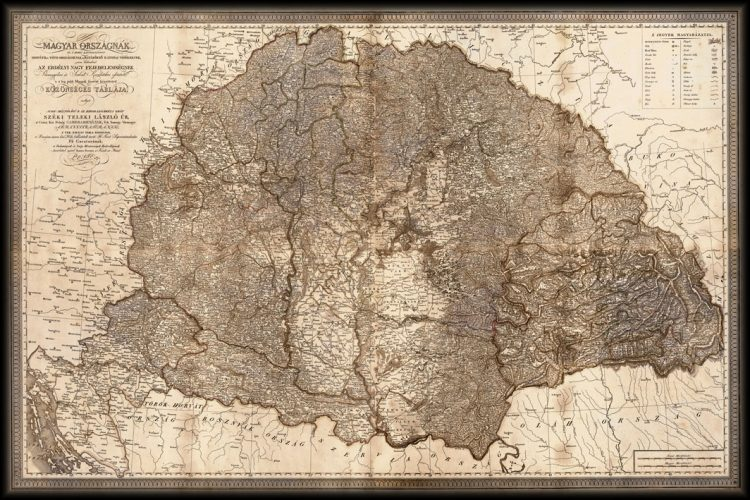

Regatul ungar a luat ființă în anul 1000 sub conducerea lui Ștefan I al Ungariei, primul rege maghiar. Numele originar al acestuia era Vajk.
Ștefan I, cunoscut și ca Sfântul Ștefan (Szent István), s-a căsătorit cu Ghizela, fiica lui Henric II Duce de Bavaria. În anul 996 a devenit
conducătorul statului maghiar, Ungaria. Ca rege catolic a asigurat trecerea populației la creștinism și a înființat biserica ungară.
A întemeiat zece episcopii, iar regatul l-a împărțit în comitate (în maghiară: vármegye). Ungaria a devenit regat patrimonial unde
majoritatea terenului era împărțit în proprietăți private.
Inițial istoria nașterii politice al Ungariei a evoluat alături de cea a Poloniei și Boemiei (Cehia), în strânsă legătură cu

papii de la Roma și cu Sfântul Imperiu Roman interesați în expansiunea catolică și teritorială înspre Est (Est-Europa),
în concurență cu Imperiul Roman de Est (Bizantin) de la Constantinopol, care sprijinea Creștinismul Ortodox în Sud-estul Europei.
Între 1241-1242 Ungaria a fost asaltată și înfrântă de hoardele tătare sau mongole conduse de Batu Han în bătălia de la Muhi.
În mod treptat, sub conducerea dinastiei Árpád statul maghiar (fiind în vecinătate) s-a alăturat civilizației vest-europene.
Sub dinastia Angevinilor, Ungaria și-a pierdut controlul hegemonic asupra Valahiei în urma bătăliei de la Posada din 9-12 noiembrie
1330, dintre voievodul român Basarab I și regele Carol Robert de Anjou. Ulterior, pierdu și controlul celei de a doua țări românești, Moldova în 1359.
Un moment culminant în istoria Ungariei îl constituie domnia regelui Matei Corvin, dintr-o familie nobilă cu rădăcini în Transilvania.
Regele Matia Corvin, a fost fiul lui Ioan de Hunedoara - regent al Ungariei (cunoscut de către maghiari ca János Hunyadi)
și a condus Regatul Ungar din 1458 până în 1490. În această perioadă, care coincide cu anii Renașterii în Europa de vest și centrală,
 Ungaria a cunoscut o perioadă înfloritoare, devenind un important centru cultural. Ioan de Hunedoara și fiul său,
Matia Corvin (Hunyadi Mátyás), au luptat împotriva Imperiului Otoman, consolidând independența Ungariei față de acesta.
Independența Ungariei a luat însă sfârșit în 1526 după bătălia cu otomanii (turcii) de la Mohács. Regatul a fost împărțit
în trei părți: partea de vest a fost anexată de Austria, principatul Transilvănean a devenit independent de Ungaria,
iar centrul Ungariei a ajuns ca pașalâc sub stăpânirea Imperiului Otoman timp de peste 150 de ani, în sec. XVI - XVII.
După 150 de ani de ocupație otomană, în secolul XVII Austria și alianța creștină au eliberat centrul Ungariei ocupat de Imperiul Otoman.
Revolta maghiară (lipsită de succes) pentru independență, dintre anii 1703 și 1711 condusă de Francisc Rákóczi al II-lea a
fost îndreptată contra dominației habsburgilor austrieci, care stăpâneau și Transilvania.
Ungaria a cunoscut o perioadă înfloritoare, devenind un important centru cultural. Ioan de Hunedoara și fiul său,
Matia Corvin (Hunyadi Mátyás), au luptat împotriva Imperiului Otoman, consolidând independența Ungariei față de acesta.
Independența Ungariei a luat însă sfârșit în 1526 după bătălia cu otomanii (turcii) de la Mohács. Regatul a fost împărțit
în trei părți: partea de vest a fost anexată de Austria, principatul Transilvănean a devenit independent de Ungaria,
iar centrul Ungariei a ajuns ca pașalâc sub stăpânirea Imperiului Otoman timp de peste 150 de ani, în sec. XVI - XVII.
După 150 de ani de ocupație otomană, în secolul XVII Austria și alianța creștină au eliberat centrul Ungariei ocupat de Imperiul Otoman.
Revolta maghiară (lipsită de succes) pentru independență, dintre anii 1703 și 1711 condusă de Francisc Rákóczi al II-lea a
fost îndreptată contra dominației habsburgilor austrieci, care stăpâneau și Transilvania.